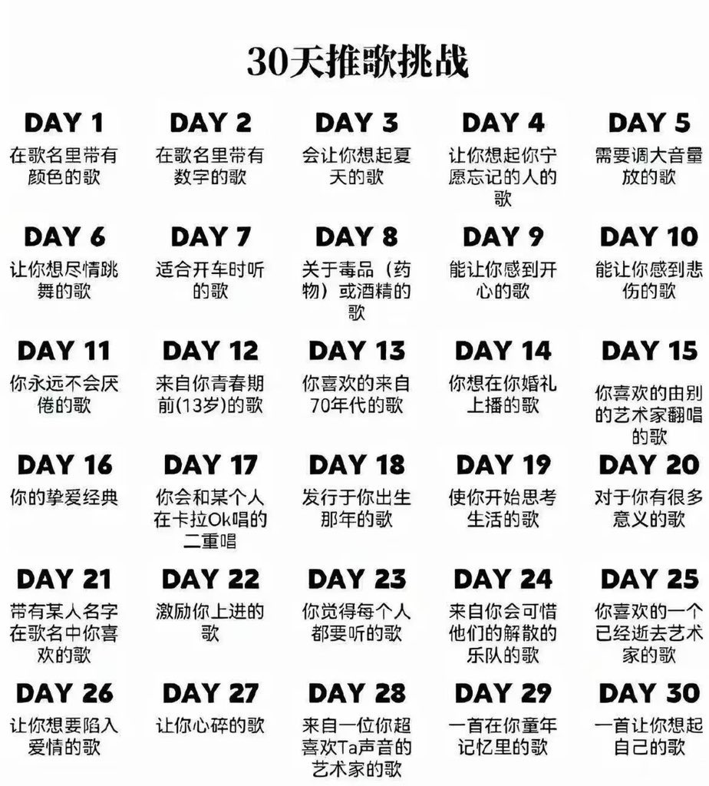

リジー
@silentbleeding1
@0nemoresec 原来是李斯特（
神秘八爪鱼先生倾诉大海中，这首真的好美啊，有大海的平静也有波澜起伏的躁动😭

000
@0nemoresec
Day 16
3 Etudes de concert, S. 144: No. 3 Un sospiro (叹息/大海) — Franz Liszt
最喜欢的一首古典 曾经因为这首想去学钢琴但是无奈手太短了✋✋ 我还是更喜欢叫它大海 完美诠释了我对海的所有憧憬 https://t.co/OeT7I08te2